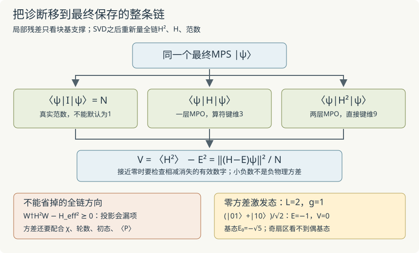

本页目录
基础衔接 15 · 全链方差与初态：很小的残差，为什么仍会找错态？
先修：MPO与Krylov、Ising奇偶全谱、两站点截断。现在把诊断从当前两个站点扩展到实际保存的整条链：直接收缩 H²、H 和范数，再让不同初态在相同预算下重跑。
1. 先问：局部之外还有哪些方向？
设左右块基已经正交，W把中心坐标嵌入完整物理空间，\(W^\dagger W=I\)，\(P_W=WW^\dagger\) 是当前可见子空间的正交投影。对归一化中心向量v，\(|\psi\rangle=Wv\)，局部算符为
这里的W是块基嵌入矩阵，与上一讲MPO局部张量的W符号用途不同。只在本节用这个矩阵写清投影；程序不需要构造它。
完整残差按正交方向分解：
两项分别在当前子空间及其正交补中，故
局部求解器只能检查第一项。即使第一项为零，H仍可能把态送到当前左右块支撑看不见的方向。等价地，
因此把小矩阵H_eff平方，不能代替真正的全链H²。测量时必须使用最终截断后的MPS；SVD前的向量属于另一个检查阶段。
2. 从能量分布推导方差
全讲取有限维、Hermitian Hamiltonian和非零态。先除以范数：
因为E是实数，展开平方得到
单位也有区别：E以J计，V以J²计，残差范数\(\sqrt V\)以J计；网页固定J=1。
在正交本征基中，写归一化态为\(\sum_n c_n|n\rangle\)，\(p_n=|c_n|^2\)，则
V=0当且仅当态全部位于同一个能量本征子空间中；允许简并，不要求只有一个基向量。这个本征值未必最低。若V很小，则至少存在一个本征值距E不超过\(\sqrt V\)，否则上面的加权平均会大于V。
还可以给出可核验的谱概率界：对任意\(\delta>0\)，
证明只有一步：左侧每个方向都在V中贡献至少\(\delta^2p_n\)。它控制的是“落在E附近以外的权重”，没有把E指定为基态能量。
若另知非简并基态E₀及所有激发态\(E_n\ge E_1>E\)，则
这个基态保真度界用到了独立的谱位置信息与\(E<E_1\)，不能只凭V小就使用。若基态简并，p₀应改成整个基态子空间的权重。
3. 一个两站点反例，比一段“已收敛”提示更有用
仍取开放Ising链
奇偶算符为\(P=\prod_jZ_j\)。每个XX项反转两个自旋，与P交换；横场Z也与P交换，所以\([H,P]=0\)。
L=2时，偶扇区基\((|00\rangle,|11\rangle)\)与奇扇区基\((|01\rangle,|10\rangle)\)分别给出
能谱为\(\pm\sqrt{1+4g^2}\)与\(\pm1\)。取
它满足\(P\psi_-=-\psi_-\)、\(H\psi_-=-\psi_-\)，所以E=−1、V=0。但g=1时基态能量是\(-\sqrt5\)。从只含该奇扇区的向量出发，H的任意幂仍看不到偶扇区基态。增加Krylov步数并不能补上缺失的初始方向。
这不是说每个MPS扫描都严格困在初始奇偶扇区：若采用精确对称张量，扇区约束是实现的一部分；本页用普通实张量，浮点误差和截断可能混合扇区，所以另测\(\langle P\rangle\)。若归一化态满足\(\langle P\rangle=\pm1\)，由于P的本征值只有±1，才能判定它位于单一扇区；接近±1表示大部分权重在那里。
4. 真正把MPO乘起来
下面用A、B表示两个算符的局部MPO张量。乘积AB在一个站点的张量是
先作用B，再作用A；u是B的输出与A的输入。左右算符键各取张量积，边界也变成\(\ell_A\otimes\ell_B\)与\(r_A\otimes r_B\)。物理指标u在本地求和，不能与算符键混为一谈，也不能调换非对易算符的顺序。
对上一讲算符键维3的Ising MPO，直接令A=B得到键维9的H²。它保留所有跨站点交叉项，包括两个不同横场或不同相邻项的乘积；并非只把每个单项平方后求和。这里没有再做MPO压缩，9只是该直接构造的键维，不声称最小。
用上一讲的全链环境递推分别收缩I、H、H²，以及P的键维1乘积表示。最后除以同一范数N，再相减得到V。这个步骤只测已有MPS的全链矩，不重新优化，也不在两次H之间插入块基投影。它比只算H需要更多算符键存储与运算；网页未声称最优复杂度。

5. 做四个初态，保持计算预算相同
实验比较四个归一化乘积态：
- 60°态：每站\(\cos(\pi/6)|0\rangle+\sin(\pi/6)|1\rangle\)。
- Z全上：\(|0\cdots0\rangle\)，初始P=+1。
- Z单翻转：\(|10\cdots0\rangle\)，初始P=−1。
- X全正：每站\((|0\rangle+|1\rangle)/\sqrt2\)。
局部Krylov上限固定32，所有SVD候选直接接受，扫描规则相同。控制L、g、χ与往返轮数时，四个初态都从头重跑。K=32不保证在全部设置下局部搜索充分，结果仍列出最大局部残差。
默认L=6、g=1、χ=2、两轮，精确E₀≈−7.296229811：
| 初态 | 最终E | 全链V | 最终〈P〉 |
|---|---|---|---|
| 60° | −7.294262597 | 0.010199274 | 约+1 |
| Z全上 | −7.294262540 | 0.010199921 | +1 |
| Z单翻转 | −6.801782754 | 0.067060041 | −1 |
| X全正 | −7.294262609 | 0.010199132 | 约+1 |
按三个步骤检查：先看默认四条轨迹；再把χ降到1，此时Z全上最终E=−6、V=5，局部残差仍约10⁻¹⁵，清楚暴露局部之外的误差；最后取L=4、χ=4，Z单翻转得到E≈−4.064177772，而另外三种得到基态E≈−4.758770483，所有方差均降到本实验浮点分辨标度以下。对照第3节的解析反例，理解低方差激发态为何不矛盾。
无脚本后备：默认四种初态的能量、方差和奇偶见上表。χ=1时Z全上局部残差极小但全链方差为5；L4χ4时奇扇区结果比基态高约0.694592711，数值小方差不作为严格零证书。两站点解析反例E=−1、V=0、E₀=−√5不依赖脚本。
6. 大数相减时，不要把浮点零当成证明
本页直接算\(V=\langle H^2\rangle-E^2\)。当两项约为几十，真实差值远小于它们时，末位舍入可能产生很小负数。程序同时展示原始差值及标度
这只是保守显示用的启发式分辨标度，不是逐项传播得出的严格浮点误差上界。若差值在此标度以下，界面不把其平方根显示成已证实的物理残差；若出现超出标度的负方差，程序报错，要求检查收缩或数值误差。需要严格证书时还须稳定残差算法、高精度或带误差界的运算。
数值验收对小链另外展开完整波函数，用自旋比特直接作用H，再算\(\|(H-E)\psi\|^2/N\)，不复用被测H²的MPO构造。独立NumPy本征态和非归一化随机MPS也用于核对H²与范数。网页运算本身仍完全沿张量收缩；有限验算不代替所有输入的正确性证明。
7. 两道迁移题
题一。 已知非简并E₀=0，所有激发能量≥2，归一化试探态测得E=0.2、V=0.36。用正文方差界估计基态以外的权重。若不知道激发谱下界，只知道V=0.36，还能保留这个结论吗？
查看答案：谱位置信息不能省
因为\(E_1-E\ge1.8\)，
如果这些E和V是数值测量，应用时还要传播其误差。没有激发谱下界与E的位置条件，V小只控制某个E附近的谱窗口，不能保证该窗口含基态。第3节激发态甚至有V=0。
题二。 某次两站点更新中，求解器报告局部残差零。有人把H_eff平方当作全链H²，算出方差零。指出漏掉的项，并说明改用四个初态是否足以补成基态证明。
查看答案：漏掉投影之外，重复次数也不是证明
漏掉的是正半定矩阵\(W^\dagger H(I-P_W)HW\)；在当前态上它贡献\(\|(I-P_W)HWv\|^2\)。应对最终保存的MPS收缩真正H²和范数，测全部物理方向。四个初态可发现初态敏感性，却没有遍历全部变分态，也没有排除共同的局部陷阱或错误扇区；还要结合键维、预算、对称性和独立谱信息。
速查与资料
先分辨测量对象：局部Ritz态、截断候选、最终全链态。再检查真实H²、归一化和浮点消减；最后用多初态与奇偶辅助判断。下一步的时间演化还要分开Trotter与逐步截断误差，不能直接从静态小方差推得长期动力学准确。
双层MPO收缩H²及中间投影遗漏信息的讨论，可参照 Schollwöck的MPS综述第6.4节与图44、45。本页方差恒等式、谱概率界与两站点反例由正文直接推导。来源核查：2026-09-09。
继续演化：张量时间演化与误差实际施加复数门、移动正交中心并截断；用三条轨迹区分时间分裂、压缩与浮点检查，给可证明的多步误差界。